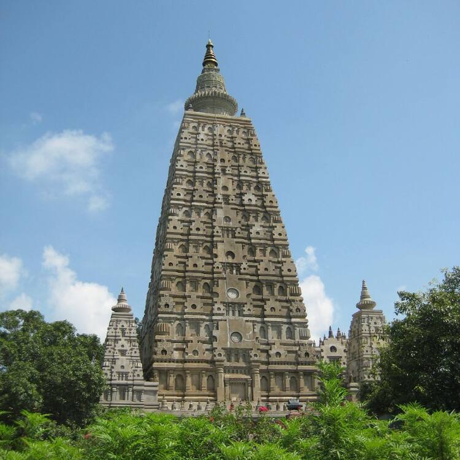
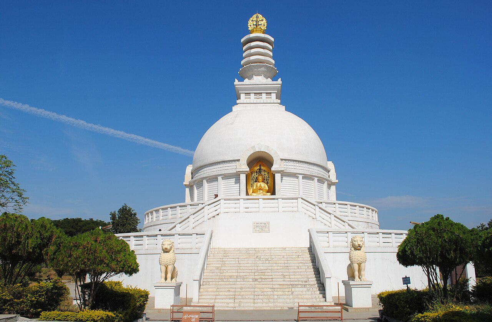
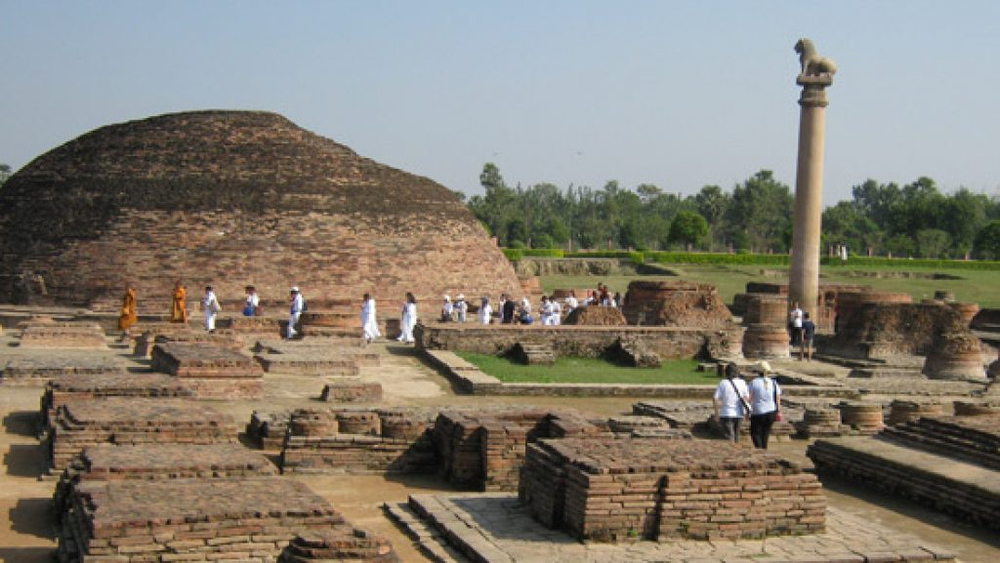

Top Destinations

Ruins Of Nalanda
Nalanda, was a renowned Buddhist monastery in ancient and medieval Magadha (modern-day Bihar), eastern India.

Mahabodhi Temple
The Mahabodhi Temple Complex is one of the four holy sites related to the life of the Lord Buddha, and particularly to the attainment of Enlightenment. The first temple was built by Emperor Asoka in the 3rd century B.C.

Vishwa Shanti Stupa
The Vishwa Shanti Stupa Is Located On A 400 Metre High Hill. The Stupa Is Built In Marble And On The Four Corners Of The Stupa Are Four Glimmering Statues Of Buddha.

Ashoka Pillar
Emperor Ashoka built The Lion Pillar at Kolhua. It is made of a highly polished single piece of red sandstone, surmounted by a bell shaped capital, 18.3 m high. A life-size figure of a lion is placed on top of the pillar.